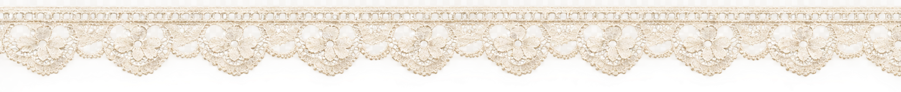
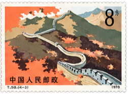
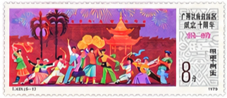
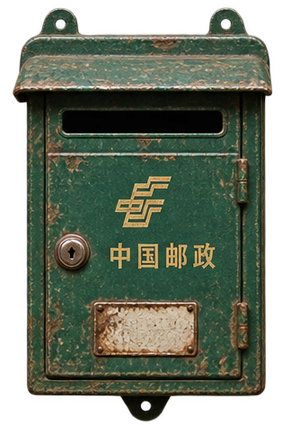
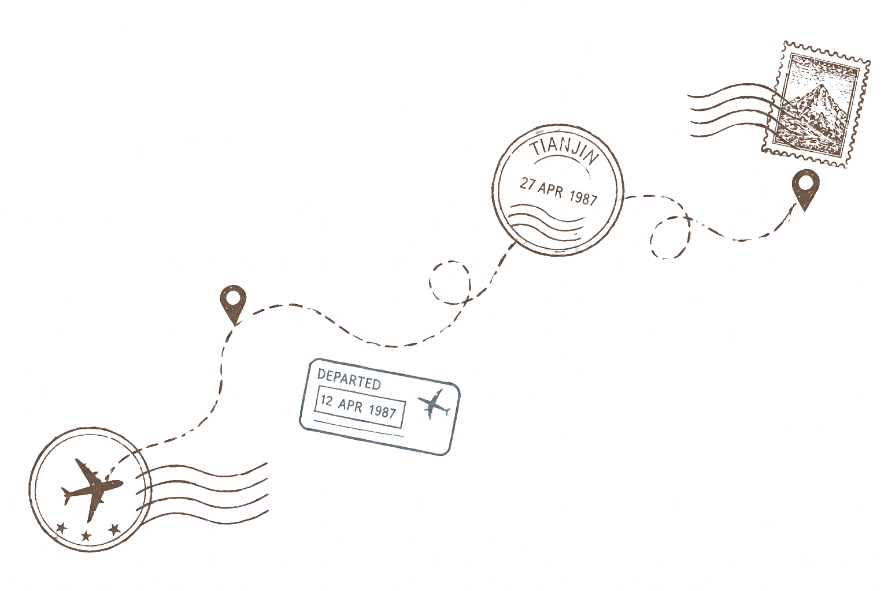

My father had a whole collection of stamps tucked away in a drawer.


The pages were faintly yellow and slightly curled at the edges,
as if someone had flipped through them many times before...
When I asked how life before the internet was,
he simply told me how much he liked the effort everyone put into things.
Writing letters was the main way to keep in touch with someone far away back then.
My father wrote to college friends, family back home, and even pen pals he had never met in person.
It wasn't convenient, but there was a kind of warmth in it.
He waited for forever wondering if the other person received the letter, and then he'd wait all over again,
wondering when a reply would finally make its way into his mailbox.

He remembers how every letter felt a little bit different
...
People used different types of paper
and different
colors
of ink.
Everyone had their own handwriting,
𝓈ℴ𝓂ℯ 𝒻𝒶𝓃𝒸𝓎 𝓌𝒾𝓉𝒽 𝒸𝓊𝓇𝓁𝓈 ℴ𝓃 𝓁ℯ𝓉𝓉ℯ𝓇𝓈,
and some so neat that they almost looked like they were printed.
Even the envelopes had traces of their journey
creases, stamps, and little marks
from all the places they had been.

It was like opening a present.
The thought that someone who cared
had taken the time to think about what to say and write down words from the bottom of their heart was special.
Knowing that people were also waiting for the letter,
no matter how far apart they were,
made them feel close to each other.
“It's not like that now,” he says,
“Yeah, it's easy to get in touch, but it's not the same.”
With text messages, phone calls, and video chats, we can interact directly with anyone we want to reach.
Everything is much faster and easier now.
But maybe because everything is just so easy that some of that sincere feeling is lost.
My father still enjoys the convenience the Internet brings, but he feels nostalgic for a time
when people had something to look forward to and something to remember.
.--——--——--------,.
``-. ,-´ |
| ``-. ,-´ |
| `-´ |
| click to open |
'---------——--——--'